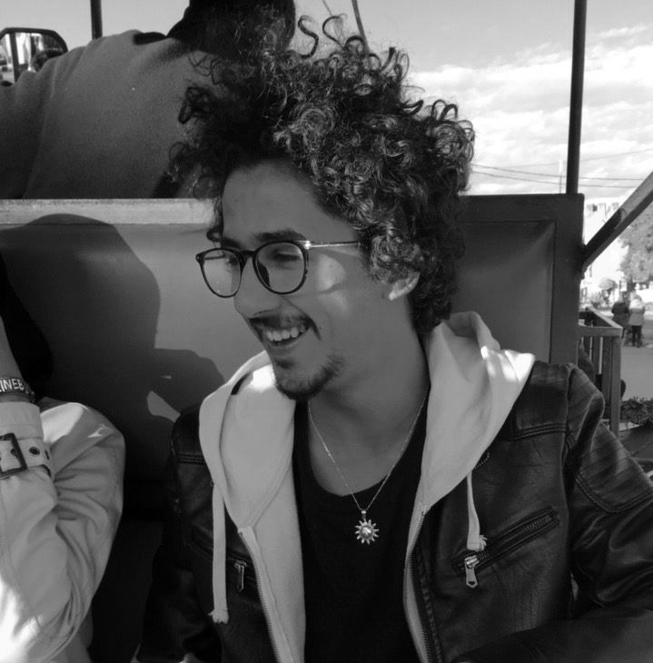

Ridouane Tansouft
Avenue Adrar N 710 Dr Temsia, Ait Melloul
Technicien supirieur au mantenance automobile
22ans
0627309165
redtansouft@gmail.com
FORMATIONS
2017/2018 à Casablanca
formation avec l'organisation suisse Drosos
2017/2018 à CONNECT Institute, Agadir
Participation au programme MOMKIN
2017/2018 à CONNECT Institute, Agadir
formation CILab sur les nouvelles technologies avec deux étudians américaine de MIT Cambridg University.
2016/2018 au Lycée technique AL IDRISSI, Agadir
baccalauréat en Sciences et Technologies Electrique
2015/2016 au Lycée Moulay ISMAIL, Meknès
Brevet de Technicien Supérieur en maintenance automobile.
EXPERIENCES PROFESSIONNELLES
Secteur Automobile
Du 10/05/2017 au 10/06/2017 au SUD CONCESSIONS AUTOMOBILE, Agadir
Poste occupé : l'atelier.
Misssions et tâches réalisées: pannes automobile diagnostic et solutions
Secteur Automobile
Du 23/07/2016 au 17/08/2016 au SUD CONCESSIONS AUTOMOBILE, Agadir
Poste occupé : l'atelier.
Misssions et tâches réalisées: pannes automobile diagnostic et solutions
COMPETENCE
COMPETENCE TECHNIQUE
Entretien de machines
Gestion de stress
Gestion de ressource matérielle
Travial en groupe
Maintenance automobile
COMPETENCE INFORMATIQUE
Logiciels maîtrisés : Pneumatix, Crocodile, Microsoft office, Photoshop, illustrateur, Tinkercad, HTML, CSS, JavaScript, mySQL, PHP, Lightroom, Final Cut Pro.
Connaissances en: domaine de l'automobile et mécanique générale, électrique et électrique, informatique, photographie, video Maiking.
COMPETENCE LINGUISTIQUE
Arabe: maternelle
Français: courant (B2)
anglais: intermédiaire avancé (B2)
Tamazight: parlé
CENTRES D'INTERETS
La lecture, surf, la music, les voyages, travail associative, sports, rédaction, design.